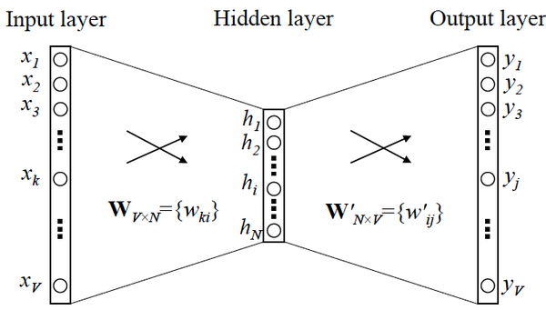
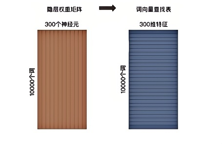
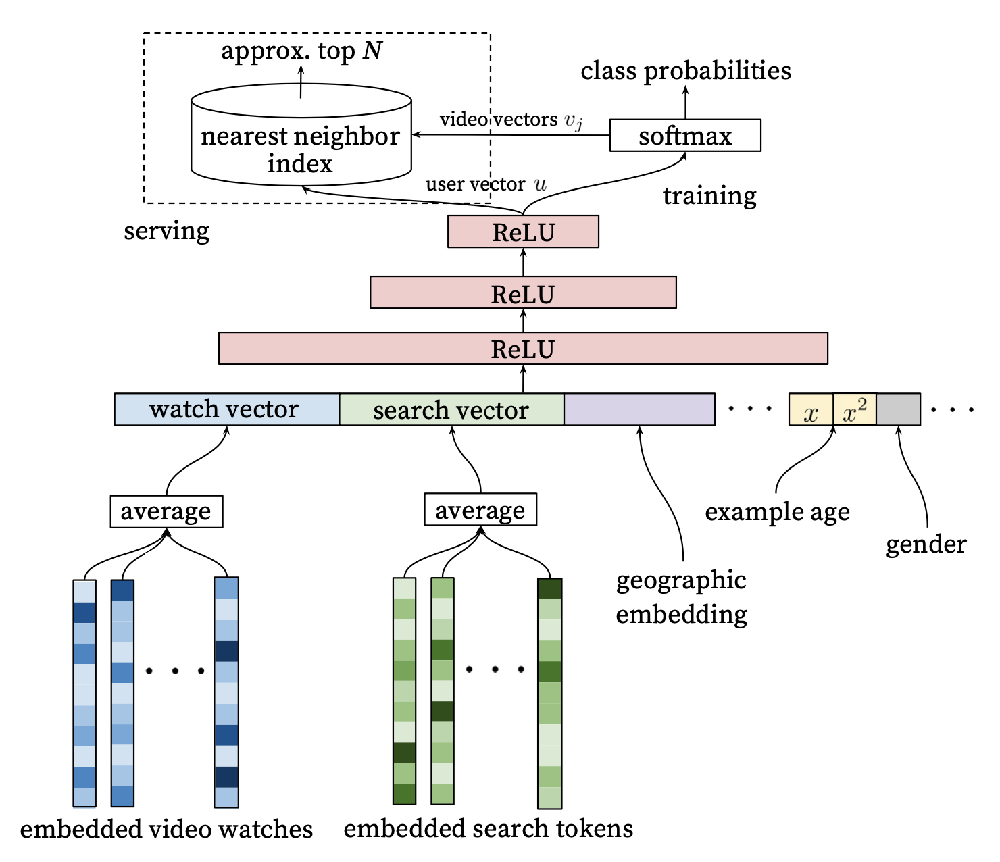
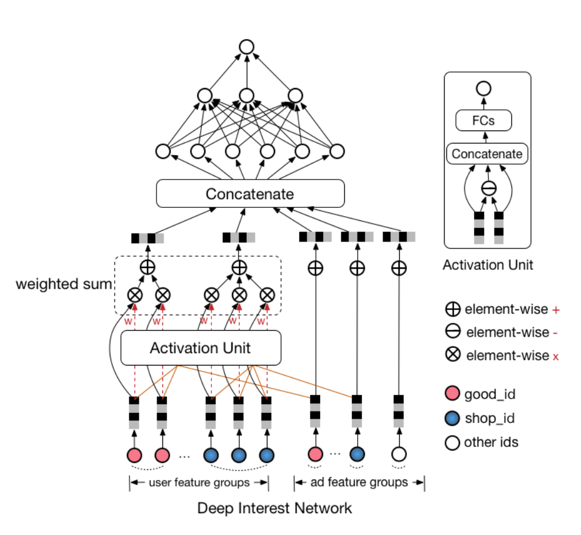
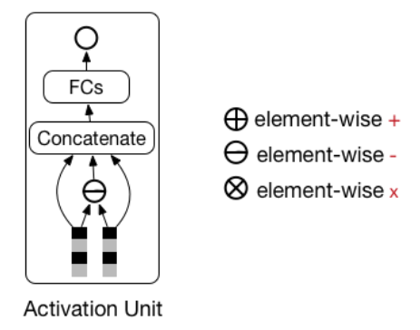
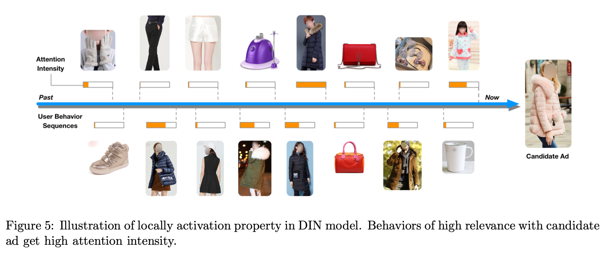
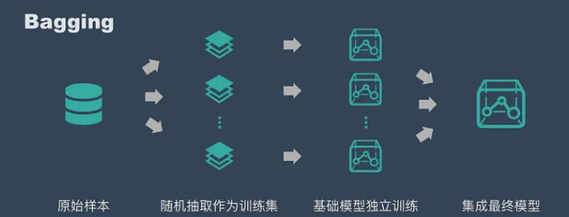

面试记录3：MiniMax技术一面
1 面试背景
- 面试公司：MiniMax 大模型公司
- 面试岗位：大模型推荐&广告算法实习生
- 面试类型：技术一面
- 面试时间：2024-12-04 17:00~18:00
- 面试结果：通过 😊
2 整体感受
面试之前一点也不紧张，因为自己保研参加很多线下的面试，而且之前也参加过华为的面试等，所以心态不慌。
面试官刚进来的时候，一看就知道是个强者，前面的头发快没了，而且一副中年程序员的样貌。在面试的过程中还是挺放松的，也一直和面试官讨论技术问题。最后，面试管问我还有什么问题么？我就问了很多我自己关于推荐系统的思考，感觉很 nice，面试官也和我讨论了很多。
需要改进的地方：
- 自我介绍再背的熟一些
- 准备的再充分一些
感觉自己发挥的挺好的，没有什么硬伤，还有一些小细节需要优化吧。
3 提问的问题
面试官：你先介绍一下自己吧。
balabala………
3.1 Word2Vec
面试官：看到你参加了天池新闻推荐系统比赛，你可以说一下你是怎么用 Embedding 进行召回的吗？
我主要使用 2 种方法来进行 Embedding，分别是 Word2Vec 和 训练 YouTube DNN 得到 Embedding。
首先介绍一下 Word2Vec，Word2Vec 是一个生成对“词”的向量表达的模型。分为词袋模型和跳元模型。
利用的物品序列是由特定用户的浏览、购买等行为产生的历史行为记录序列来生成 Embedding。输入向量表达就是输入层到隐层的权重矩阵 ，而输出向量表达就是隐层到输出层的权重矩阵 。

在获得输入向量矩阵 后，其中每一行对应的权重向量就是通常意义上的“词向量”。于是这个权重矩阵自然转换成了 Word2Vec 的查找表（lookup table）。

假设语料库中的词的数量为 10000，就意味着输出层神经元有 10000 个，在每次迭代更新隐层到输出层神经元的权重时，都需要计算所有字典中的所有 10000 个词的预测误差（prediction error），在实际训练过程中几乎无法承受这样巨大的计算量。
为了减轻 Word2Vec 的训练负担，往往采用负采样（Negative Sampling）的方法进行训练。相比原来需要计算所有字典中所有词的预测误差，负采样方法只需要对采样出的几个负样本计算预测误差。
在此情况下， Word2Vec 模型的优化目标从一个多分类问题退化成了一个近似二分类问题，如下式所示：
其中 是输出词向量（即正样本）， 是隐层向量， 是负样本集合， 是负样本词向量。一般来说负样本集合的规模 在小数据集中取 2~5，在大数据集中取 5~20，所以计算量会大大降低。
实际上，加快 Word2Vec 训练速度的方法还有分层 softmax，但实现较为复杂，且最终效果没有明显优于负采样方法，因此较少采用。
3.2 YouTube DNN

由于 YouTube DNN 最后的输出层是 softmax，该 softmax 层的参数本质上是一个 维的矩阵，其中 指的是最后一层（ReLU 层）的维度， 指的是分类的总数，也就是 YouTube 所有视频的总数为 。那么视频 Embedding 就是这个 维矩阵的各列向量。这样的 Embedding 生成方法其实和 Word2Vec 中词向量的生成方法相同。
用户向量的生成就很好理解，因为输入的特征全部都是用户相关的特征，所以在使用某用户 的特征向量作为模型输入时，最后一层 ReLU 层的输出向量可以当作该用户的 Embedding 向量。在模型训练完成后，逐个输入所有用户的特征向量到模型中，就可以得到所有用户的 Embedding 向量。
面试官：那你得到 Embedding 之后是怎么进行召回的？
在预测某用户的物品候选集时，先得到该用户的 Embedding 向量，再在物品 Embedding 空间中利用局部敏感哈希等方法搜索该用户 Embedding 向量的 TopK 近邻，就可以快速得到 个候选视频集合。
我针对新闻具有强时效性的特点，只是用了用户点击的最近 3 个新闻的 Embedding 作平均来进行召回。
面试官：你对用户最近点击的 3 个新闻的 Embedding 取平均，然后再进行召回，取平均之后是不是会丢失掉一些信息？
确实会丢失掉一些信息，因为如果用户最后点击的几个新闻都是不同类型的，mean 之后的 Embedding 所表达的信息就失真了，这一点确实应当注意。
3.3 LGB 模型
面试官：你选用的是 LGB 模型和 DIN 模型，LGB模型是基于树的，你能说一下这两个模型有什么区别吗？
LightGBM（Light Gradient Boosting Machine）是一款基于决策树算法的分布式梯度提升框架。为了满足工业界缩短模型计算时间的需求，LightGBM 的设计思路主要是两点：
- 减小数据对内存的使用，保证单个机器在不牺牲速度的情况下，尽可能地用上更多的数据
- 减小通信的代价，提升多机并行时的效率，实现在计算上的线性加速
由此可见，LightGBM 的设计初衷就是提供一个快速高效、低内存占用、高准确度、支持并行和大规模数据处理的数据科学工具。
LightGBM 和 XGBoost 的区别：
（1）树生长策略：XGB 采用 Level-wise 的分裂策略，LGB 采用 Leaf-wise 的分裂策略。
- XGB 对每一层所有节点做无差别分裂，但是可能有些节点增益非常小，对结果影响不大，带来不必要的开销。
- Leaf-wise 是在所有叶子节点中选取分裂收益最大的节点进行的，但是很容易出现过拟合问题，所以需要对最大深度做限制 。
（2）分割点查找算法：XGB 使用特征预排序算法，LGB 使用基于直方图的切分点算法，其优势如下：
- 减少内存占用，比如离散为 256 个 bin 时，只需要用 8 位整形就可以保存一个样本被映射为哪个 bin（这个 bin 可以说就是转换后的特征），对比预排序的 exact greedy 算法来说（用 int32 来存储索引 + 用 float32 保存特征值），可以节省 7/8 的空间。
- 计算效率提高，预排序的 exact greedy 对每个特征都需要遍历一遍数据，并计算增益，复杂度为 。而直方图算法在建立完直方图后，只需要对每个特征遍历直方图即可，复杂度为 。
- LGB 还可以使用直方图做差加速，一个节点的直方图可以通过父节点的直方图减去兄弟节点的直方图得到，从而加速计算。
（3）支持离散变量：无法直接输入类别型变量，因此需要事先对类别型变量进行编码（例如独热编码），而 LightGBM 可以直接处理类别型变量。
（4）缓存命中率：XGB 使用 Block 结构的一个缺点是取梯度的时候，是通过索引来获取的，而这些梯度的获取顺序是按照特征的大小顺序的，这将导致非连续的内存访问，可能使得 CPU Cache 缓存命中率低，从而影响算法效率。而 LGB 是基于直方图分裂特征的，梯度信息都存储在一个个 bin 中，所以访问梯度是连续的，缓存命中率高。
（5）LightGBM 与 XGboost 的并行策略不同：
-
特征并行：LGB 特征并行的前提是每个 worker 留有一份完整的数据集，但是每个 worker 仅在特征子集上进行最佳切分点的寻找；worker 之间需要相互通信，通过比对损失来确定最佳切分点；然后将这个最佳切分点的位置进行全局广播，每个 worker 进行切分即可。XGB 的特征并行与 LGB 的最大不同在于 XGB 每个worker 节点中仅有部分的列数据，也就是垂直切分，每个 worker 寻找局部最佳切分点，worker 之间相互通信，然后在具有最佳切分点的 worker上进行节点分裂，再由这个节点广播一下被切分到左右节点的样本索引号，其他 worker 才能开始分裂。二者的区别就导致了 LGB 中 worker 间通信成本明显降低，只需通信一个特征分裂点即可，而 XGB 中要广播样本索引。
-
数据并行：传统的数据并行策略主要为水平划分数据，让不同的机器先在本地构造直方图，然后进行全局的合并，最后在合并的直方图上面寻找最优分割点。
这种数据划分有一个很大的缺点：通讯开销过大。LightGBM 在数据并行中使用分散规约（Reduce scatter）把直方图合并的任务分摊到不同的机器，降低通信和计算; 在节点分裂时利用直方图做差，进一步减少了一半的通信量。参考 LightGBM 的并行优化。
-
投票并行（LGB）：基于投票的数据并行则进一步优化数据并行中的通信代价，使通信代价变成常数级别。在数据量很大的时候，使用投票并行的方式只合并部分特征的直方图从而达到降低通信量的目的，可以得到非常好的加速效果。具体过程如下图所示。大致步骤为两步：
- 本地找出 TopK 特征，并基于投票筛选出可能是最优分割点的特征；
- 合并时只合并每个机器选出来的特征。
3.4 DIN 模型

DIN 网络结构整体上来看是在 embedding 层与 MLP（全连接层）之间加入了 activation unit。从上图能够看出，用户历史点击过的商品 id（good id）只与候选广告的商品 id 算相关性（上图中是 element-wise 减，当然你也可以算内积等，甚至可以都算），用户历史点击过的商铺 id 只与候选广告的商铺 id 算相关性。
以下模块是整个DIN网络的核心模块，也是该模型的创新之处，如下图所示。

最后，论文中给出了一张示意图比较清晰的展示了用户历史行为 item 与广告 item 之间的 attention 得分，DIN 这种基于 attention score 的设计比较 soft 的得到了用户历史行为中每个 item 对于目标广告 item 的贡献度。

面试官：单看这两个模型输出的结果，哪个更好呢？
DIN 模型的效果更好一些，因为 DIN 模型引入了注意力机制，能够对用户兴趣进行更好的捕捉。
3.5 bagging
面试官：模型的输出是什么？你用的什么集成学习方法进行融合的？
我把推荐问题当作一个分类问题，然后每个模型的输出都是一个概率，代表选择每个候选物品的可能性。之后使用的 bagging 集成学习方法进行融合。
为了建立一个集成学习方法，我们首先要选择待聚合的基础模型。在大多数情况下（包括在众所周知的 bagging 和 boosting 方法中），我们会使用单一的基础学习算法，这样一来我们就有了以不同方式训练的同质弱学习器。
这样得到的集成模型被称为「同质的」。然而，也有一些方法使用不同种类的基础学习算法：将一些异质的弱学习器组合成「异质集成模型」。
很重要的一点是：我们对弱学习器的选择应该和我们聚合这些模型的方式相一致。如果我们选择具有低偏置高方差的基础模型，我们应该使用一种倾向于减小方差的聚合方法；而如果我们选择具有低方差高偏置的基础模型，我们应该使用一种倾向于减小偏置的聚合方法。
Bagging 的思路是所有基础模型都一致对待，每个基础模型手里都只有一票。然后使用民主投票的方式得到最终的结果。
大部分情况下，经过 bagging 得到的结果方差（variance）更小。

具体过程：
- 从原始样本集中抽取训练集。每轮从原始样本集中使用 Bootstraping 的方法抽取 n 个训练样本（在训练集中，有些样本可能被多次抽取到，而有些样本可能一次都没有被抽中）。共进行 k 轮抽取，得到 k 个训练集。（k 个训练集之间是相互独立的）
- 每次使用一个训练集得到一个模型，k 个训练集共得到 k 个模型。（注：这里并没有具体的分类算法或回归方法，我们可以根据具体问题采用不同的分类或回归方法，如决策树、感知器等）
- 对分类问题：将上步得到的 k 个模型采用投票的方式得到分类结果；对回归问题，计算上述模型的均值作为最后的结果。（所有模型的重要性相同）
面试官：你了解一些大模型的基础知识吗？或者说，你能说一下为什么大模型能 work 吗？
这个感觉答的很好哈哈哈，因为之前面过一个大模型实习岗位，有些经验。balabala……
4 手撕代码
给你一个正整数 ，可以将其分解为多个正整数的和（可以分解为自身），如下：
- 请找出分解出的多个 连乘的最大结果是多少，即求解 。
- 如果可以将正整数 分解为多个正数的和，即 可以是小数，求解 。
后来发现力扣上有一道很像的题目：343. 整数拆分。但是第一问有点不一样，力扣中的题目要求至少分解为两个整数，但是面试的题目可以分解为自身。
4.1 问题一
当时看到这道题的时候懵了一下，因为之前没见过这种题。然后当时先说了可以暴力枚举每一个 ，之后面试官说你可以想一下有没有其他的方法。之后，我就在想可以用到什么方法，之后就突然想到其实可以使用动态规划。
当时表现的挺好的，直接就说了应该可以使用动态规划，然后我把我为什么想用动态规划解决的思路给面试官讲了：
当我们分解 时，可以枚举分解结果中会出现的每一个正整数 ，然后剩下就需要找出和为 的分解问题，可以发现一个大问题分解成了一个小问题，相当于找到了一个子问题。
之后面试官说让我写一下代码，其实当时还不知道怎么写哈哈哈，就是有个思路，然后就开始写了……
- 状态表示： 表示和为 的分解出的 的最大连乘结果
- 状态计算：
由于第 个状态需要从第 个状态转移过来，所以肯定从小到大遍历，题解如下：
1 |
|
当时第一遍其实写错了，具体在于第二层循环 的范围写成了 ，没有包含边界 ，这样是不对的，因为假设分解 ，如果 $j $ 最大为 ，那么就没有考虑分解为自身，所以出错。
感觉当时面试官看到我这么做好像是第一次见，因为我当时第一遍写完了，面试官说他需要看一下，让我先看第二道题。之后他好像没太懂我的意思，就让我给他解释一下为什么这么做。
然后运行了之后答案不对，面试官让我找一下问题出在哪里。其实我当时有点慌的，怕做不出来，然后挂了。但是当时感觉也没有什么压力，就认真的去想，然后马上就找到了问题，重新测试结果正确。
然后面试官又和我讨论了一个 trick，他说 是我使用的技巧，最好初始化如下：
只能说太细了。
4.2 问题二
第二题就有点迷，因为可以分解成很多小数。当时就一直想是不是平均分配乘积最大？然后就说了这个想法，面试官说是的，问我那应该均分成多少份？
然后我当时就假设均分为 份，写了以下表达式：
当时就想这怎么写程序求解，然后就说可以枚举每一个 ，之后突然意识到这不就是函数求极值的问题么，应该可以求导，找导数为 的 ，面试官认可了这个思路，然后基本就结束了。
5 总结
- 在面试的过程中抱着思考交流的心态，和面试官一起讨论技术，感觉这样很舒服。因为很少有机会能和工业界的技术人员进行交流。
- 就算面试的过程中遇到一些不会的问题，可以大胆给出自己的思考，感觉面试中不止看重结果，你的思维逻辑也很重要。
 微信
微信 支付宝
支付宝